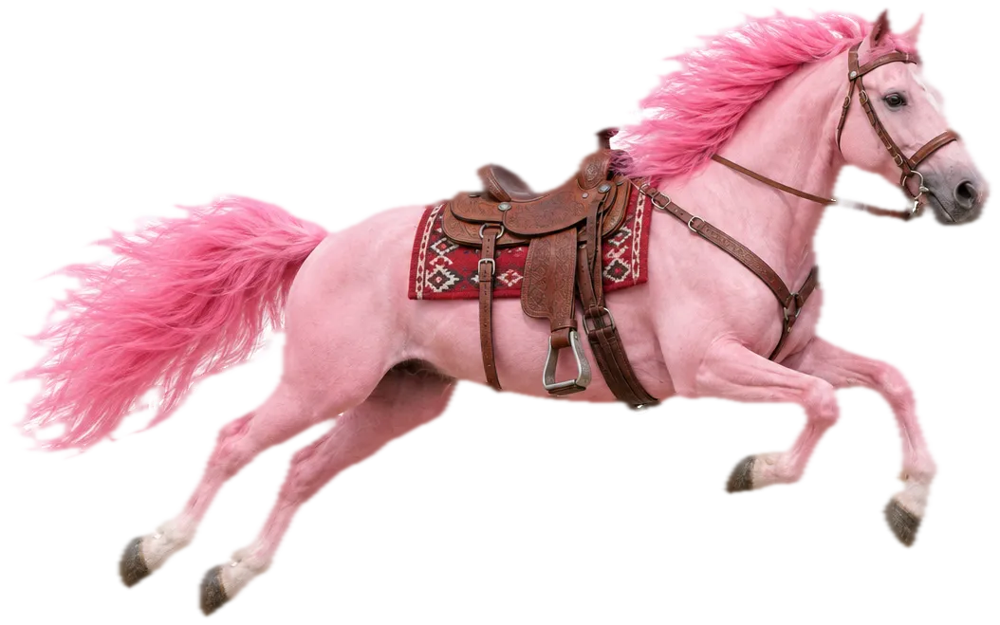

Пример 1Memnun oldum. Приятно познакомиться.

Короткое описание под заголовком: что человек узнает на этой странице и зачем дочитать до конца.
О гайде
Этот абзац для главной мысли гайда. Здесь коротко сказано, что человек узнает и почему это пригодится сразу.
Второй абзац для подробностей. Сюда можно вписать, для кого гайд, с какого уровня его читать и что понадобится под рукой.
Что внутри
Как устроен гайд
Гайд идёт по шагам: сначала главное, потом детали, в конце короткий вывод. Каждый шаг можно прочитать отдельно и вернуться к нему позже.

Здесь абзац о первой части гайда: с чего начать и на что смотреть в первую очередь.
А здесь о том, что человек сможет сделать после чтения. Одно конкретное действие без общих слов.
Коротко о том, что делать на этом шаге. Одна мысль на строку.
Здесь второй шаг. Пример удобно показать картинкой справа.
Третий шаг. После него человек может сам применить то, что прочитал.
Короткий вывод после шагов: одна фраза, которую человек унесёт с собой и вспомнит завтра.
Здесь короткий ответ. Пример фразы: Yardım eder misiniz?
Здесь ответ про уровень. Если нужна картинка, она встанет слева от текста.
Здесь ответ про следующий шаг: что повторить и куда двигаться дальше.
Да. Ссылка остаётся, страницу можно сохранить в закладки.
Гайд закончился. Сохрани ссылку, чтобы вернуться к шагам, когда понадобится.